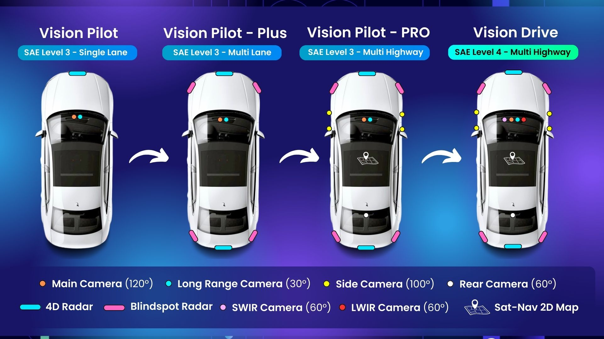

Autoware - Low Speed Autonomy Vehicles#
The repo describes the goal, use case, and design of low speed autonomy vehicles using Autoware.
To learn more about how to participate in this project, please read the onboarding guide
Value Proposition#
Low-speed autonomous (LSA) vehicles are envisioned as a practical near-term solution for specific use cases, particularly in controlled environments including university campuses, industrial sites, resorts, and warehouse. These vehicles, often operating at speeds below 25 mph, are seen as a stepping stone towards full autonomy and offer a more manageable environment for testing and deployment of autonomous technologies. They can address immediate needs like last-mile delivery, campus transportation, and on-site logistics, while also providing valuable data and experience for the development of higher-speed autonomous systems.
According to a number of market research reports, the total projected market size of LSA vehicles in 2035 will be more than 113.96B USD in the United States. The following figure shows the market size of different use case categories.
| Use Case Category | Segment (if applicable) | Current Market Value (USD Billion) | Year of Current Value | Projected Market Value (USD Billion) | Year of Projection | Compound Annual Growth Rate (CAGR) | Source(s) | Notes |
|---|---|---|---|---|---|---|---|---|
| Cargo-Moving | Utility Terrain Vehicles (UTVs) | $6.642 | 2024 | $10.48 | 2032 | 5.9% | [1] | This market size refers to the global Utility Terrain Vehicle (UTV) market as a whole, which is used to transport equipment, feed, and personnel [1]. |
| Warehousing - Mixed Use | Total Market | ~$4.7 | 2024 | ~$13.8 | 2030 | ~20% | [2] | This total market includes Hybrid AMRs, Autonomous Yard Trucks, and Outdoor-Enabled Forklifts. The demand for end-to-end automation drives the fastest growth in the hybrid AMR segment [2]. |
| Hybrid AMRs (Indoor/Outdoor) | 2.5 | 2024 | ~8 | 2030 | ~22% | [2] | This segment is noted as the fastest growing due to demand for end-to-end automation [2]. | |
| Autonomous Yard Trucks | 1.2 | 2024 | ~3.5 | 2030 | 18% | [2] | These are seeing strong adoption in manufacturing and port-adjacent warehouses [2]. | |
| Outdoor-Enabled Forklifts | 1 | 2024 | ~2.3 | 2030 | 15% | [2] | ||
| Ports | Autonomous Driving Solutions | ~$1.5–2.0 | 2024 | ~$6–8 | 2030 | 20–25% | [3] | This market is driven by efficiency demands, labor shortages, and sustainability goals, including Autonomous Terminal Trucks, AGVs, ASCs, and Software [3]. |
| Airports | Autonomous Driving Solutions | $1.0–1.5 | 2024 | $4.5–6.0 | 2030 | 20–25% | [4] | Driven by rising passenger traffic, labor shortages, and smart airport initiatives, this includes Baggage Tractors, Cargo Loaders, Passenger Shuttles, and Baggage Handling Robots [4]. |
| Low-speed Logistics | Autonomous Yard-Truck Solutions | $0.8 | 2024 | $2.2 | 2030 | ≈22% | [5] | Demand for these solutions is strongest in fenced yards and mega-plants where 24/7 trailer or pallet moves create bottlenecks [5]. |
| Outdoor-capable AMRs (heavy-payload) | 2.3 | 2024 | 4.6 | 2030 | ≈15% | [5] | ||
| Service | Outdoor Cleaning Robots (all) | $18 | 2024 | $41 | 2030 | 18% | [6] | This is a broad category for outdoor cleaning robots, which may include both autonomous and non-autonomous solutions [6]. |
| Autonomous Street Sweepers | 0.45 | 2024 | 1.2 | 2033 | 12.5% | [6] | Market drivers include labor shortages, low-emission zones, and predictable, map-based routes [7]. | |
| Line-Marking Robots | 0.08 | 2025 | 0.18 | 2033 | 15% | [6] | ||
| Campus Shuttle Service | Shuttle Buses (overall market) | $15.7 | 2023 | ~$26.5 | 2032 | >6% (2024-2032) | [8, 9] | This market size refers to the overall shuttle bus market. The growth in this market from 2022-2032 is specifically driven by the increase in the market size of minibuses, which are typical for campus and micro-circulation shuttle services [8, 9]. |
Limitations of Existing Technologies#
Low speed vehicles drive a low speed and can reduce the injuries to the other road users. Many challenges remain open.
Obstacle Perception Challenge#
- Lack of complete road infrastructure:
- Cost sensitive:
- Safety Priority:
- Mixed traffic flows:
Driving Corridor Perception Challenge#
Safety First#
Cost reduction#
The cost of LSA includes the capital cost and operation cost.
High Definition Maps#
(From PoV) We will not utilize 3D high definition prior maps, instead opting to use existing 2D navigational (sat-nav style) maps, also called ADAS maps. Human beings can drive on highways without prior knowledge of the detailed 3D geometry of roadways by relying on real-time scene perception, and our system aims to mimic this process.
End-to-End AI Architecture#
(From PoV) We will follow an End-to-End AI Architecture in which each component technology of the highway pilot system is powered through neural-networks. We will follow a modular AI approach with component AI systems allowing for system explainability, introspection, verification and safety validation.
Technology Roadmap#
Goal#
(From PoV) We will aim to develop true hands-off, eyes-off autonomous driving which is enabled on highways across the world, this will be classified as SAE Level-4 autonomy, where no human supervision is required of the vehicle.
Technology Release Cycle#
(From PoV) We will iteratively and sequentially build the core software stack of the highway pilot system in a modular manner, and release versions of the autonomous highway pilot system that serve a core customer need, where each new release expands upon the operational-design-domain, technology prowess and safety envelope of the prior release.

Vision Pilot#
(From PoV) Vision Pilot will enable SAE Level-3 autonomy over the full range of highway driving speeds (0 - 70mph). The system will be constrained to single lane driving (no lane changes, exits, on-ramps, roadworks), and will be operable on roads with clearly visible lanes. If these road conditions (ODD) are violated, then the system will perform a safe handover of control to the human driver, and if a handover is not possible, then the system will perform a Minimal Risk Manoeuvre to transition the self-driving car to as a safe state as is possible within its operational design domain. Vision Pilot's sensing suite will comprise two front-facing cameras, a main camera, as well as a long-range camera. Additionally, the system will integrate a front-facing 4D Imaging RADAR.
Vision Pilot - Plus#
Vision Pilot - Plus will enable SAE Level-3 autonomy over the full range of highway driving speeds (0 - 70mph), and will build on top of the functionality of Vision Pilot to enable fully autonomous lane changes - exits/ramps will be outside of the operational domain of the system. To enable autonomous lane changes, Vision Pilot Plus will additionally utilise 360 degree RADAR sensing through the introduction of corner RADARs for blindspot monitoring and a rear-facing 4D Imaging RADAR for safe lane changes at highway driving speeds
Vision Pilot - PRO#
Vision Pilot - PRO will enable SAE Level-3 autonomy over the full range of highway driving speeds (0 - 70mph) for an entire highway journey, including fully autonomous lane changes, exits, and on/off-ramps - being able to traverse multiple distinct connected highways without any human intervention or guidance. To enable autonomous driving of an entire highway journey, Vision Pilot - PRO will be integrated with 2D/ADAS maps to have more detailed road context and prior information about highway road layouts for navigational purposes. It will also additionally include side view cameras as well as a rear-facing camera, which will be needed for negotiating highway merges/exits. The 360 degree camera coverage will also help in online map generation using 2D/ADAS maps as prior guidance.
Vision Drive#
Vision Drive will enable SAE Level-4 autonomy over the full range of highway driving speeds (0 - 70mph) for an entire highway journey, including fully autonomous lane changes, exits, and on/off-ramps without any requirement for human supervision or manual control. In order to ensure system safety and robustness, Vision Drive will additionally integrate Short-Wave-Infrared as well as Long-Wave-Infrared front facing cameras which will allow the vehicle to see through fog, dust, haze, smoke and see clearly in pitch-black conditions. This hyper-spectral imaging will enable Vision Drive to match or exceed human safety performance of the driving task, enabling through SAE Level-4 autonomy.